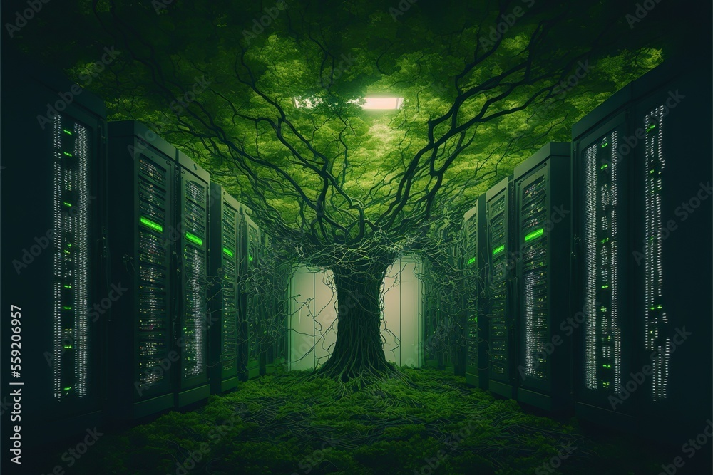

Aman Raj
Registration Number: 12316842 Roll Number: 46

Udit Singh
Registration Number: 12317478 Roll Number: 47

Abhishek Yadav
Registration Number: 12317510 Roll Number: 49
Udit, Aman, Abhishek
What is green computing and it's relation to sustainable development
Scroll Down ↓Climate change refers to significant, long-term changes in the average temperature, weather patterns, and other climate conditions on Earth. Global warming, on the other hand, is a specific aspect of climate change, referring to the increase in Earth's average surface temperature over time.The primary driver of recent climate change is human activities, particularly the burning of fossil fuels (such as coal, oil, and natural gas) and deforestation. These activities release greenhouse gases, such as carbon dioxide (CO2) and methane (CH4), into the atmosphere. Greenhouse gases trap heat, leading to a warming effect known as the greenhouse effect. While the greenhouse effect is a natural phenomenon necessary for life on Earth, human activities have significantly intensified it, causing the planet to warm at an accelerated rate.
Green computing is of paramount importance in our increasingly digital world. It addresses the urgent need to reduce the environmental impact of information technology, from energy-efficient hardware and data center management to sustainable materials and responsible disposal of electronic waste. By embracing green computing practices, we can lower energy consumption, decrease carbon emissions, save on operational costs, and conserve valuable resources. It aligns with corporate responsibility initiatives, enhances reputation, and contributes to a more sustainable and eco-conscious future. Green computing is not only essential for mitigating the negative effects of IT on the environment but also for promoting a greener, more cost-effective, and socially responsible technology industry.
Registration Number: 12316842 Roll Number: 46
Registration Number: 12317478 Roll Number: 47
Registration Number: 12317510 Roll Number: 49
This section tells us about the tools used in making this Website and the sources and external help taken
We Hope you learned the benefit of Green Computing
Back To Top →